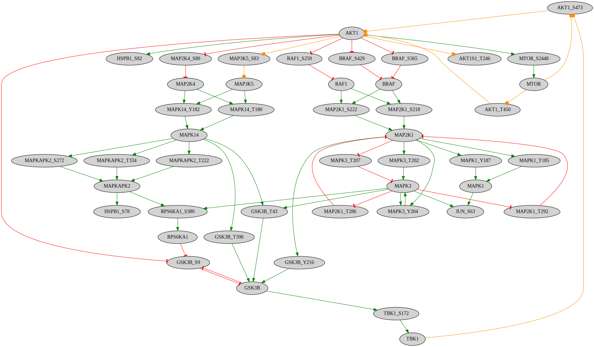

Build network based on kinase-phosphosite interactions
This notebook provides the code to create a network based on kinase-substrate interactions and the annotated effect of phosphorylation (based on PhosphositePlus) on the activity of the substrate.
[3]:
%%time
from neko.core.network import Network
from neko._visual.visualize_network import NetworkVisualizer
from neko._inputs.resources import Resources
from neko._annotations.gene_ontology import Ontology
import omnipath as op
import pandas as pd
CPU times: user 15.7 s, sys: 565 ms, total: 16.2 s
Wall time: 17.6 s
1. Specify kinase-substrate interaction file and phosphosite effect annotation
In this example, both files we utilize are from PhosphositePlus.
[4]:
kinase_int_file = ("../neko/_data/Kinase_Substrate_Dataset")
phospho_effect_file = ("../neko/_data/Regulatory_sites")
2. Add interactions as a resource database
The process_psp_interactions function parses the provided files to create an interaction database in the Omnipath format.
[5]:
resources = Resources()
interactions = resources.process_psp_interactions(kinase_int_file, phospho_effect_file,"human", expand=True)
resources.add_database(interactions)
/home/eirini/Documents/Git/omniflow_project/neko/_inputs/resources.py:313: SettingWithCopyWarning:
A value is trying to be set on a copy of a slice from a DataFrame.
Try using .loc[row_indexer,col_indexer] = value instead
See the caveats in the documentation: https://pandas.pydata.org/pandas-docs/stable/user_guide/indexing.html#returning-a-view-versus-a-copy
kinase_int_filtered['target'] = kinase_int_filtered['SUB_GENE'] + '_' + kinase_int_filtered['SUB_MOD_RSD']
/home/eirini/Documents/Git/omniflow_project/neko/_inputs/resources.py:329: SettingWithCopyWarning:
A value is trying to be set on a copy of a slice from a DataFrame.
Try using .loc[row_indexer,col_indexer] = value instead
See the caveats in the documentation: https://pandas.pydata.org/pandas-docs/stable/user_guide/indexing.html#returning-a-view-versus-a-copy
phospho_effect_filtered['MOD_RSD'] = phospho_effect_filtered['MOD_RSD'].apply(
/home/eirini/Documents/Git/omniflow_project/neko/_inputs/resources.py:333: SettingWithCopyWarning:
A value is trying to be set on a copy of a slice from a DataFrame.
Try using .loc[row_indexer,col_indexer] = value instead
See the caveats in the documentation: https://pandas.pydata.org/pandas-docs/stable/user_guide/indexing.html#returning-a-view-versus-a-copy
phospho_effect_filtered['Prot_site'] = phospho_effect_filtered['GENE'] + '_' + phospho_effect_filtered[
WARNING:root:The incoming database is missing some required columns: {'form_complex'}
WARNING:root:This might lead to issues in running the package.
WARNING:root:The incoming database is missing some required columns: {'form_complex'}
WARNING:root:This might lead to issues in running the package.
[6]:
#inspect database
interactions
[6]:
| source | target | is_directed | consensus_direction | consensus_stimulation | consensus_inhibition | is_stimulation | is_inhibition | curation_effort | references | sources | |
|---|---|---|---|---|---|---|---|---|---|---|---|
| 0 | EIF2AK1 | EIF2S1_S52 | True | False | False | False | 1 | True | NaN | NaN | NaN |
| 2 | PRKCD | HDAC5_S259 | True | False | False | False | 1 | True | NaN | NaN | NaN |
| 3 | PRKCD | PTPRA_S204 | True | False | False | False | 1 | False | NaN | NaN | NaN |
| 4 | PRKCD | BCL2_S70 | True | False | False | False | 0 | True | NaN | NaN | NaN |
| 6 | PRKCD | SLC9A1_S648 | True | False | False | False | 0 | True | NaN | NaN | NaN |
| ... | ... | ... | ... | ... | ... | ... | ... | ... | ... | ... | ... |
| 28983 | CASP6_S257 | CASP6 | True | False | False | False | 0 | True | False | False | False |
| 28984 | TP53_S392 | TP53 | True | False | False | False | 1 | False | False | False | False |
| 28989 | TP53_S15 | TP53 | True | False | False | False | 1 | True | False | False | False |
| 28991 | STING1_S366 | STING1 | True | False | False | False | 1 | False | False | False | False |
| 28992 | BECN1_S30 | BECN1 | True | False | False | False | 1 | False | False | False | False |
9692 rows × 11 columns
3. Define a set of phosphosites we are interested in
[7]:
genes = ['AKT1S1_T246', 'GSK3B_S9', 'AKT1_S473', 'HSPB1_S78', 'HSPB1_S82', 'MAPK14_T180', 'MAPK14_Y182', 'MAP2K1_S218', 'MAP2K1_S222', 'RPS6KA1_S380', 'MTOR_S2448', 'JUN_S63', 'MAPK3_T202', 'MAPK3_Y204']
4. Build network
[8]:
%%time
new_net1 = Network(genes, resources=resources.interactions)
CPU times: user 5.48 s, sys: 598 ms, total: 6.08 s
Wall time: 8 s
[11]:
%%time
new_net1.complete_connection(maxlen=10, k_mean="extensive", only_signed=True, connect_node_when_first_introduced=True)
CPU times: user 4min 6s, sys: 2.56 s, total: 4min 8s
Wall time: 4min 9s
[12]:
visualizer1 = NetworkVisualizer(new_net1, color_by='effect')
visualizer1.render()

[ ]: